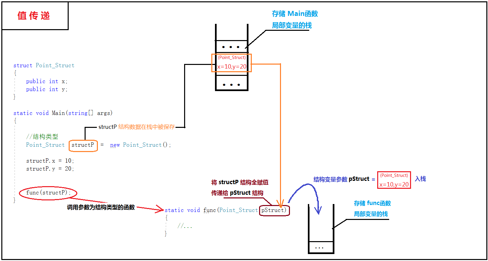

一、“老生常谈”值类型与引用类型
众所周知，.NET类型系统由 类、结构、枚举、接口 和 委托 组成。而根据内存分配的方式来区分，所有的类型又被分为 值类型 与 引用类型。
一说到值类型，大多数人都会自信地说，“值类型不就是 int,float,double...还有...额...还有啥来着？”。然后开始支支吾吾，似懂非懂，就像当初刚刚毕业的我面对面试官的提问，并且号称自己已有一年使用c#编程的经验（惭愧，惭愧）。
值类型的确是包括了int，float...这些c#预定义的数值数据类型，它们也有共同的名称，叫做结构。结构和枚举都属于值类型，它们都隐式派生自System.ValueType。简而言之，System.ValueType的作用是确保所有派生类型（如任何结构）都分配在栈上而非垃圾回收堆上。创建和销毁分配在栈上的数据都很快，因为它的生命周期是由定义的作用域决定的。值类型就像是富土康在暑假期间招的学生临时工一样，直接从各个劳务中介那里一批批地拉进工厂，不需要像正式工那样复杂的入职手续，非常方便的就能上流水线操作，解决人力需求，别问我为什么知道这么多。
有同学可能会问 int、float 怎么会是结构？easy,你把光标在vs中放在 int 上，你自然就会明白了。
由于值类型基于值的语法，结构（也包括所有数值数据类型 int、float 等，以及任何枚举或自定义结构）的生命周期是可以预测的。当结构变量离开定义域的范围是，他就会立即从内存中移除：
1 //本地变量在方法返回时弹出栈
2 static void func()
3 {
4 //“int”其实是 System.Int32 结构
5 int i = 0;
6
7 //Point 是结构类型
8 Point p = new Point();
9
10 }//“i”和“p”在这里弹出栈
11
引用类型则被创建在堆内存中，堆内存就像是一个混乱的监狱，这里的一切不再像栈那样井然有序，这时就必须要有一个管理者来维持秩序。当我们new一个类对象的时候，在堆内存中就会相应地开辟出一块空间来存放这个对象并返回该对象的引用（引用实际上可以用指向对象的指针来理解，有学习过c指针的同学会有同感），每次访问对象时，都是通过引用（指针）来找到相应的对象进行操作。刚创建的类对象好比就是被扔进监狱里的一个犯人，而每个犯人都有自己的牢房号，当有家属要来探访犯人时，狱警就会根据牢房号来找到对应的犯人，这里的“牢房号”指的就是对象的引用（指针）。
ok，继续用监狱的犯人来打比方，A犯人的刑期已到，到了刑满释放的日子了（A对象的资源要被释放），那么监狱的管理者到时自然就会让狱警给A犯人登记出狱。然而这背后一切的秩序都是神秘的监狱管理者在管控着，堆内存中的神秘的管理者就是CLR（Common Language Runtime）,它管理着托管堆中所有的对象资源，当对象的资源需要被释放时GC（Garbage Collection）就会回收对象的资源。
相比于值类型简单的入栈出栈的资源分配使用方式，引用类型资源的分配使用是在较为复杂的CLR的管理下由GC执行垃圾回收机制。那有人就会问了：那既然值类型的性能高于引用类型，为什么不全都用值类型呢？或者换一种问法，我是不是可以在任何场合下肆无忌惮地使用值类型呢？
那么试想一种情况：我自定义一个struct 类型作为一个方法的参数会发生什么呢？由于值类型在赋值的时候都是赋值传递的，那么每次调用都会发生全字段的赋值，这是不可接受的，这也是典型的值类型误用场景。而相对应地，引用类型在赋值的时候采用的是引用传递，传递的是对象的引用（指针），而指针变量保存的是一个指向堆内存中对象的地址，顶多只是一个int32的值，相较于一些复杂的结构类型来说，复制一个int的值比对结构的全字段进行赋值要简单的多。
说了这么多还是不如画张图来的实在，下面两张图分别描述了在 调用参数为类类型（引用类型）函数 与 调用参数为结构类型（值类型）函数 时内存中的情况：

通过上面两张图可以很直观的看出值传递和引用传递的区别：值传递是将值类型变量的值复制一个副本然后赋值给对应的函数参数，引用传递则是将对象的引用（指针）复制一个副本再赋值传递给对应的函数参数。
ok,也很简单嘛，值传递是赋值传递值类型数据本身，引用传递就是赋值传递对象的引用（指针）。理解了值传递和引用传递的原理，那么下面大家就带着对原理的掌握来尝试解释下面代码执行的结果，废话不多说，上代码：
1 class People
2 {
3 public string Name;
4 public string Info;
5 }
6
7 static void Main(string[] args)
8 {
9 People newPeople = new People() { Name = "老大", Info = "老大在Main函数中被创建" };
10
11 func1(newPeople);
12 Console.WriteLine($"Name:{newPeople.Name}|Info:{newPeople.Info}");
13
14 func2(ref newPeople);
15 Console.WriteLine($"Name:{newPeople.Name}|Info:{newPeople.Info}");
16
17 Console.Read();
18 }
19
20 static void func1(People p)
21 {
22 p = new People() { Name = "老二", Info = "老二在func函数中被创建" };
23 }
24
25 static void func2(ref People p)
26 {
27 p = new People() { Name = "老三", Info = "老三在func函数中被创建" };
28 }运行结果：
对这个运行结果尝试着用前面所掌握的原理来解释一遍：
在调用 func1函数 时，传入的参数为 newPeople变量值 的副本，参数 p 是一个只存在于 func1函数栈 中的 People对象 的引用（指针），在func1函数体中被重新赋值为一个新创建的 （Name=“老二”）People对象 的引用（指针）,但是并不影响Main函数中 newPeople 变量的值，所以 newPeople 所指向的对象依然是 （Name=“老大”）People对象；
在调用 func2函数 时，传入的参数 p 为newPeople变量的引用（指针），于是就可以通过 p 来直接改变 Main函数栈中 newPeople变量 的值，newPeople的值被改为在 fun2函数中创建的 （Name=“老三”）People对象 的引用（指针），所以newPeople指向的是（Name=“老三”）People对象。
func1函数的参数传递被称为按值传递引用类型，func2函数的参数传递则被称为按引用传递引用类型（在c语言中被称作“指针的指针”）。希望此时你的脑海中已经能清晰地构建出内存变化的图像，如果能像我一样画出内存的变化图，那么你就对值传递和引用传递就已经了然于胸了。
这里再贴上一张值类型与引用类型的对比图（一目了然）：
二、装箱与拆箱
大家都知道在C#中所有的类型都继承自System.Object,可以说Object类是所有类型的老祖宗。也正是基于这个原理，会有下面这段代码:
1 class Box
2 {
3 static void Main(string[] args)
4 {
5 int a = 5;
6
7 func(a); //在传入int变量a之前，CLR对变量a的值进行装箱，返回object引用
8 }
9
10 static void func(object o)
11 {
12 //将引用拆箱为相应的int
13 int i = (int)o;
14 }
15 }
这段代码的看点在于：函数func的参数类型为object，由于c#中所有的类型都隐式继承自System.Object，所以参数 o 可以接收任意类型的传入参数，在函数中再根据不同的传入参数类型进行不同的处理，这在不清楚传入参数类型的情况下是非常有用的。当然，这段代码的用途显而易见，大家一看就能明白，可是如果结合上面所讲的值传递与引用传递的原理，细心的同学可能会发现一个不合理的地方。
不合理的地方在于：函数的参数类型为object，System.Object 归根结底是一个引用类型，按道理说在传递参数时赋值传递的应该是保存在堆内存中对象的引用，但是在这里我们看到的是函数参数o竟然接收的是一个值类型！再回想前面值传递的原理，值类型在赋值时会复制一个副本赋值传递给值类型参数，而这里的函数参数o又不是值类型的参数，总之，这个地方很诡异！那么，在这里的值类型数据传参赋值给引用类型参数的背后，是谁在作祟？？
答案是，CLR在这里进行了装箱（box）操作。
装箱可以正式定义为：显示地将值类型分配给 System.Object 变量的过程。当我们对一个值进行装箱时，CLR就会在堆内存中分配新的对象并且将值类型的值（这里是 5）复制到那个实例上。因此，返回给我们的就是新分配在堆上的对象的引用，这个返回的引用被赋值给了 函数func 的 参数o。使用这项技术，就不需要使用一组包装类来把栈数据临时当成分配在堆上的对象进行处理。
相反的操作可以通过拆箱（unbox）来实现。拆箱就是把保存在对象中的值转换回栈上的相应值类型。CLR首先会验证收到的值类型是否等价于装箱的类型，如果是，就将值赋值回本地栈变量上；如果尝试将数据拆箱为不正确的变量，将抛出 InvalidCastException 异常。也就是说，拆箱必须回到合适的数据类型。
当C#编译器发现装箱/拆箱语法时，所生成的CIL代码包括 box/unbox 操作码。如下所示：
.method private hidebysig static void Main (string[] args) cil managed
{
.maxstack 1
.entrypoint
.locals init (
[0] int32
)
IL_0000: nop
IL_0001: ldc.i4.5
IL_0002: stloc.0
IL_0003: ldloc.0
IL_0004: box [mscorlib]System.Int32
IL_0009: call void boxing.Box::func(object)
IL_000e: nop
IL_000f: ret
}
.method private hidebysig static void func (object o) cil managed
{
.maxstack 1
.locals init (
[0] int32
)
IL_0000: nop
IL_0001: ldarg.0
IL_0002: unbox.any [mscorlib]System.Int32
IL_0007: stloc.0
IL_0008: ret
}
看到这有人会说：好吧，装箱拆箱我懂了，可是这个东西......知道当然更好，不知道好像也没什么影响，毕竟这一切操作都是CLR在背后自动完成的，不需要我们自己做什么。其实不然，知道了装（拆）箱，对实际的编程还是具有一定指导意义的，可以看一下下面这个例子。
在.NET平台最初发布时，程序员常常使用 mscorlib.dll 中的System.Collections 命名空间。该命名空间提供了很多类来管理和组织大量的数据。常用的集合类包括 ArrayList、Hashtable、Queue、Stack ...... 在当时很多.NET程序都使用这些集合类来构建，但是事实证明使用这些类型会造成相当多的问题。
ArrayList类的部分定义如下：
1 public class ArrayList : IList, ICollection, IEnumerable, ICloneable
2 {
3 ...
4 public virtual int Add(object value);
5 public virtual void Remove(object obj);
6 public virtual void Insert(int index, object value);
7 public virtual object this[int index] { get; set; }
8 }
通过上面这段ArrayList类的部分方法成员我们发现：
1、ArrayList在操作增删改查数据的过程中是类型不安全的，不管传入的数据是什么类型，最后通过索引取出来的数据都是由object类来接收，所以这就要求你事先必须知道你存进这个数据的时候它是什么类型的，当强制转换时如果错判了类型则会引发异常。
2、第二个问题则是关于性能方面的，当在使用ArrayList类进行Add操作时，如果传入的数据类型为值类型，那么就会发生 装箱 ，相应地在使用索引取出操作时，为了获取原数据类型的数据便于操作，又必须进行 拆箱 操作，我们同时要意识到的是ArrayLIst这个类本来就是为了管理和组织大量的数据，重点在于“大量”，如果只是个别的值类型数据进行装（拆）箱，那倒也还好，但是在使用ArrayList处理大量的值类型数据时，那么你就不得不注意程序的性能了，毕竟 装（拆）箱 过程要消耗的资源可不小。
当然，问题总会被解决的，如果你现在需要集合类来帮助你管理和组织大量的数据，那么你的首选当然是 泛型集合 咯。